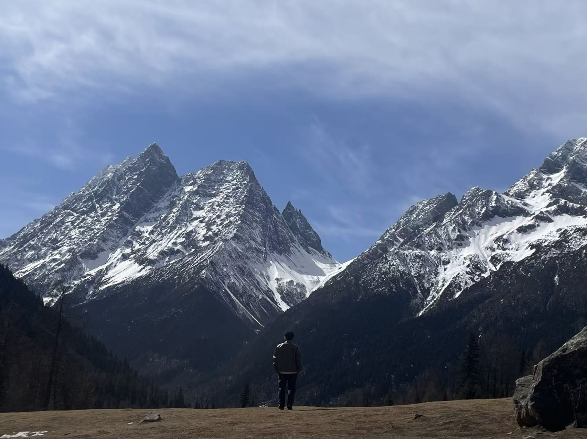
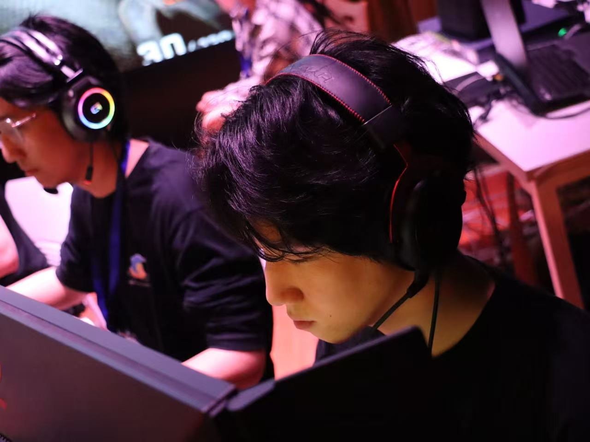
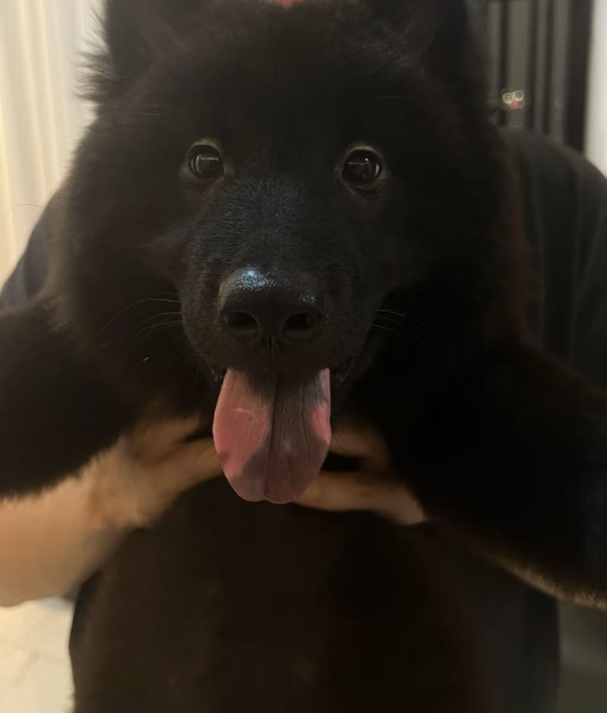
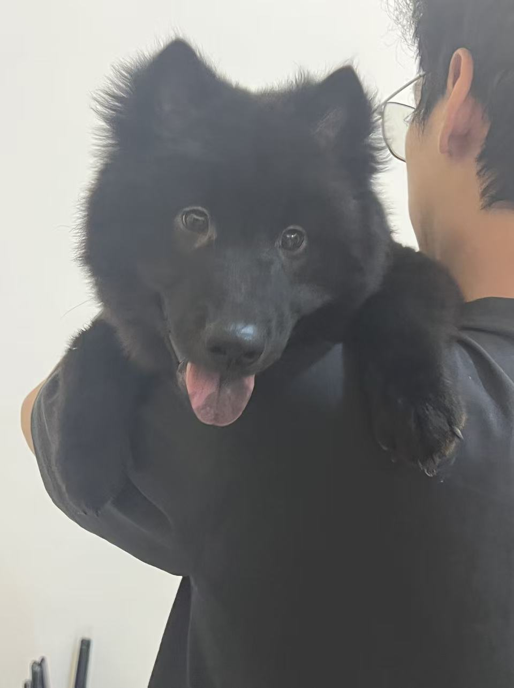
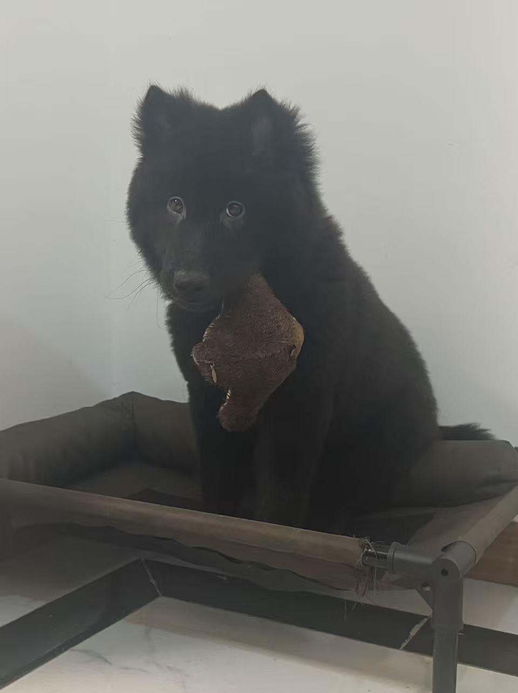
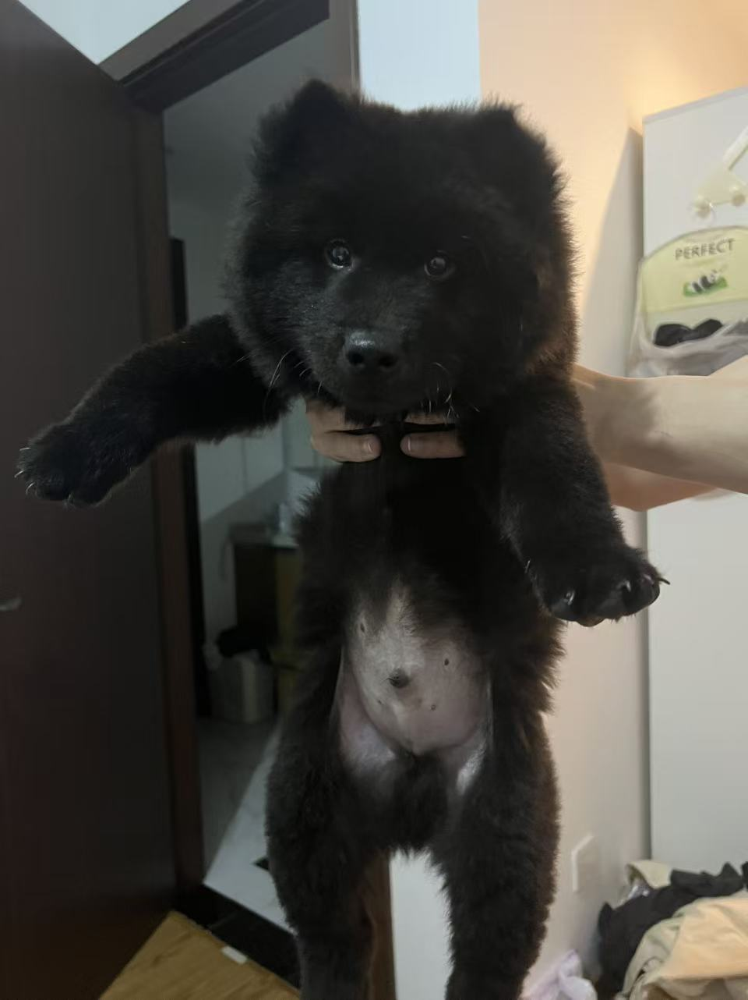

00 / PERSONALITYENFP-A · 活动家好奇、热忱，
好奇、热忱，
自由而坚定。
喜欢探索新的可能，也珍惜真诚的连接。用想象力发现生活的趣味，用细腻感受理解他人；保持灵活，乐观地走自己的路。
我的 16Personalities 结果 ↗外向53%
愿意交流，也留有自己的空间
天马行空79%
好奇心与想象力，打开更多可能
情感细腻55%
看重感受，珍惜人与人的连接
随机应变63%
喜欢灵活探索，顺应新的机会
自信果断61%
相信自己，以乐观心态向前

照片与记录，留住生活里的片刻。


喜欢探索新的可能，也珍惜真诚的连接。用想象力发现生活的趣味，用细腻感受理解他人；保持灵活，乐观地走自己的路。
我的 16Personalities 结果 ↗愿意交流，也留有自己的空间
好奇心与想象力，打开更多可能
看重感受，珍惜人与人的连接
喜欢灵活探索，顺应新的机会
相信自己，以乐观心态向前
说唱、Old School、Boombap，也听抒情音乐。
点击播放器中的 ▶ 收听。播放范围由音乐平台决定。
FPS / 即时战略 · 电子竞技运动员
赋能战魂

“旅行最重要的还是感受，以及阵容搭配，放下心来，去哪里都会有新的体验。”
雷克雅未克 · 格鲁吉亚 · 帕劳 · 北海道 · 新疆
川菜 / 湘菜 / 粤菜
啤酒：修道院 / IPA / 比利时双料
最爱：罗斯福 10 号
威士忌：Talisker 10 / Macallan 12
调酒：威士忌酸
香烟：利群黑软阳光
雪茄：SIGLO III / CEDROS DE LUXE NO.2
我有一只九个月大的黑土松，叫刀盾。
“非常可爱！非常顽皮 TAT”




 我的说唱歌单 ↗
我的说唱歌单 ↗